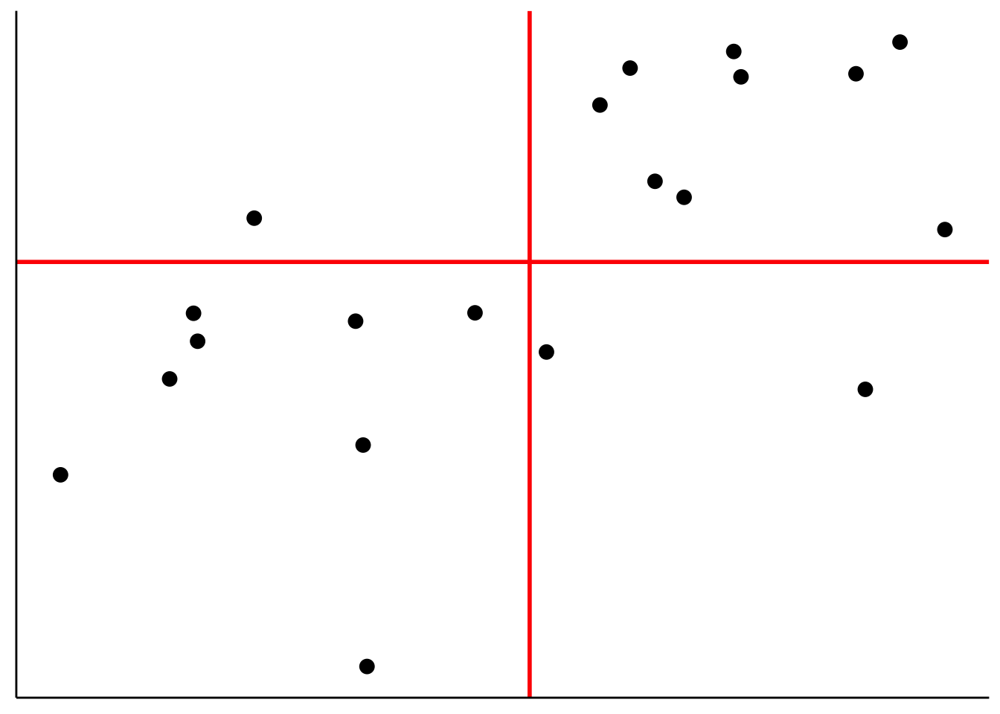
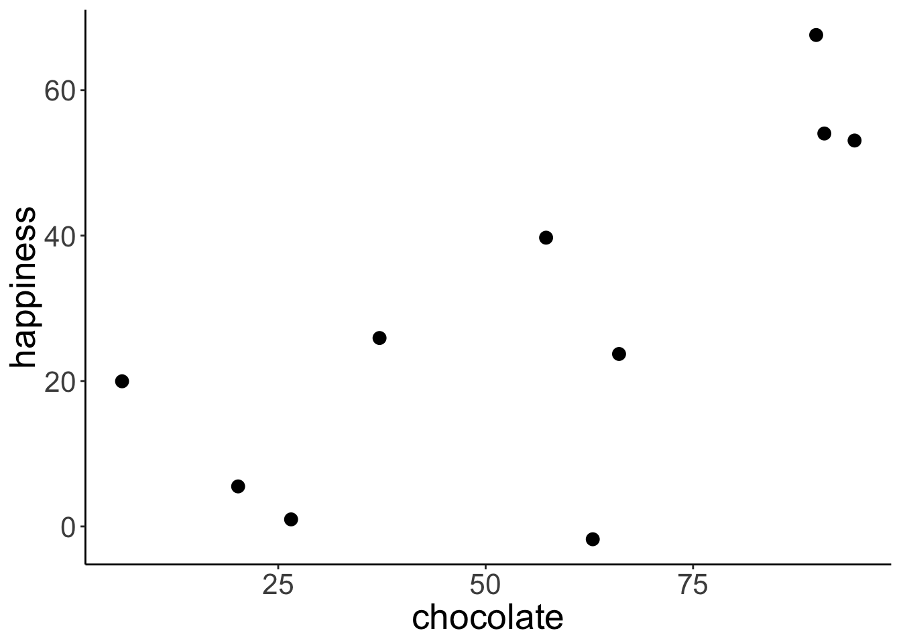
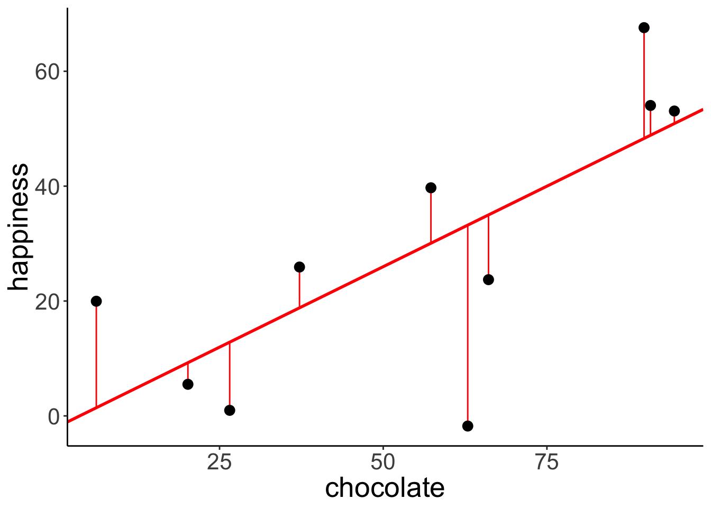
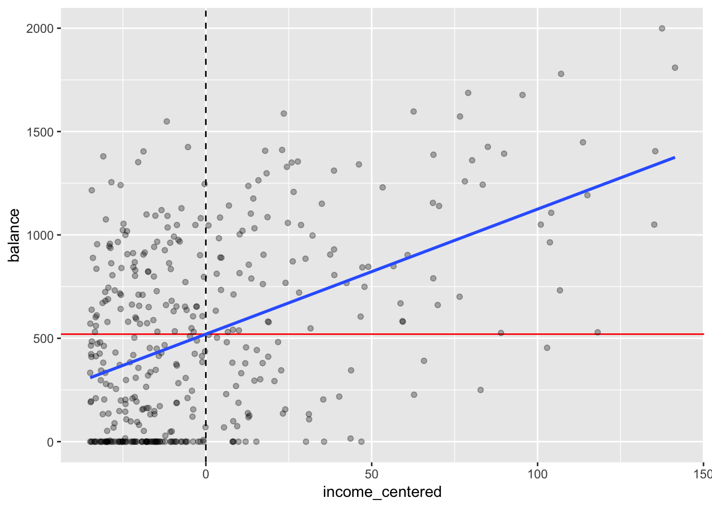

Chapter 10 Linear model 1
10.1 Load packages and set plotting theme
library("knitr") # for knitting RMarkdown
library("kableExtra") # for making nice tables
library("janitor") # for cleaning column names
library("broom") # for tidying up linear models
library("tidyverse") # for wrangling, plotting, etc.
opts_chunk$set(
comment = "",
results = "hold",
fig.show = "hold"
)theme_set(
theme_classic() + #set the theme
theme(text = element_text(size = 20)) #set the default text size
)10.2 Things that came up in class
10.2.1 Building a sampling distribution of PRE
Here is the general procedure for building a sampling distribution of the proportinal reduction of error (PRE). In this instance, I compare the following two models
- Model C (compact): \(Y_i = 75 + \epsilon_i\)
- Model A (augmented): \(Y_i = \overline Y + \epsilon_i\)
whereby I assume that \(\epsilon_i \sim \mathcal{N}(0, \sigma)\).
For this example, I assume that I know the population distribution. I first draw a sample from that distribution, and then calculate PRE.
# make example reproducible
set.seed(1)
# set the sample size
sample_size = 50
# draw sample from the population distribution (I've fixed sigma -- the standard deviation
# of the population distribution to be 5)
df.sample = tibble(
observation = 1:sample_size,
value = 75 + rnorm(sample_size, mean = 0, sd = 5)
)
# calculate SSE for each model, and then PRE based on that
df.summary = df.sample %>%
mutate(compact = 75,
augmented = mean(value)) %>%
summarize(sse_compact = sum((value - compact)^2),
sse_augmented = sum((value - augmented)^2),
pre = 1 - (sse_augmented/sse_compact))To generate the sampling distribution, I assume that the null hypothesis is true, and then take a look at what values for PRE we could expect by chance for our given sample size.
# simulation parameters
n_samples = 1000
sample_size = 50
mu = 75 # true mean of the distribution
sigma = 5 # true standard deviation of the errors
# function to draw samples from the population distribution
fun.draw_sample = function(sample_size, sigma){
sample = mu + rnorm(sample_size, mean = 0, sd = sigma)
return(sample)
}
# draw samples
samples = n_samples %>%
replicate(fun.draw_sample(sample_size, sigma)) %>%
t() # transpose the resulting matrix (i.e. flip rows and columns)
# put samples in data frame and compute PRE
df.samples = samples %>%
as_tibble(.name_repair = "unique") %>%
mutate(sample = 1:n()) %>%
gather("index", "value", -sample) %>%
mutate(compact = mu) %>%
group_by(sample) %>%
mutate(augmented = mean(value)) %>%
summarize(sse_compact = sum((value - compact)^2),
sse_augmented = sum((value - augmented)^2),
pre = 1 - sse_augmented/sse_compact)
# plot the sampling distribution for PRE
ggplot(data = df.samples,
mapping = aes(x = pre)) +
stat_density(geom = "line")
# calculate the p-value for our sample
df.samples %>%
summarize(p_value = sum(pre >= df.summary$pre)/n())# A tibble: 1 x 1
p_value
<dbl>
1 0.394
Some code I wrote to show a subset of the samples.
samples %>%
as_tibble(.name_repair = "unique") %>%
mutate(sample = 1:n()) %>%
gather("index", "value", -sample) %>%
mutate(compact = mu) %>%
group_by(sample) %>%
mutate(augmented = mean(value)) %>%
ungroup() %>%
mutate(index = str_extract(index, pattern = "\\-*\\d+\\.*\\d*"),
index = as.numeric(index)) %>%
filter(index < 6) %>%
arrange(sample, index) %>%
head(15) %>%
kable(digits = 2) %>%
kable_styling(bootstrap_options = "striped",
full_width = F)| sample | index | value | compact | augmented |
|---|---|---|---|---|
| 1 | 1 | 76.99 | 75 | 75.59 |
| 1 | 2 | 71.94 | 75 | 75.59 |
| 1 | 3 | 76.71 | 75 | 75.59 |
| 1 | 4 | 69.35 | 75 | 75.59 |
| 1 | 5 | 82.17 | 75 | 75.59 |
| 2 | 1 | 71.90 | 75 | 74.24 |
| 2 | 2 | 75.21 | 75 | 74.24 |
| 2 | 3 | 70.45 | 75 | 74.24 |
| 2 | 4 | 75.79 | 75 | 74.24 |
| 2 | 5 | 71.73 | 75 | 74.24 |
| 3 | 1 | 77.25 | 75 | 75.38 |
| 3 | 2 | 74.91 | 75 | 75.38 |
| 3 | 3 | 73.41 | 75 | 75.38 |
| 3 | 4 | 70.35 | 75 | 75.38 |
| 3 | 5 | 67.56 | 75 | 75.38 |
10.2.2 Correlation
# make example reproducible
set.seed(1)
n_samples = 20
# create correlated data
df.correlation = tibble(
x = runif(n_samples, min = 0, max = 100),
y = x + rnorm(n_samples, sd = 15)
)
# plot the data
ggplot(data = df.correlation,
mapping = aes(x = x,
y = y)) +
geom_point(size = 2) +
labs(x = "chocolate",
y = "happiness")
10.2.2.1 Variance
Variance is the average squared difference between each data point and the mean:
- \(Var(Y) = \frac{\sum_{i = 1}^n(Y_i - \overline Y)^2}{n-1}\)
# make example reproducible
set.seed(1)
# generate random data
df.variance = tibble(
x = 1:10,
y = runif(10, min = 0, max = 1)
)
# plot the data
ggplot(data = df.variance,
mapping = aes(x = x,
y = y)) +
geom_segment(aes(x = x,
xend = x,
y = y,
yend = mean(df.variance$y))) +
geom_point(size = 3) +
geom_hline(yintercept = mean(df.variance$y),
color = "blue") +
theme(axis.text.x = element_blank(),
axis.title.x = element_blank(),
axis.ticks.x = element_blank()
)
10.2.2.2 Covariance
Covariance is defined in the following way:
- \(Cov(X,Y) = \sum_{i=1}^n\frac{(X_i-\overline X)(Y_i-\overline Y)}{n-1}\)
# make example reproducible
set.seed(1)
# generate random data
df.covariance = tibble(
x = runif(20, min = 0, max = 1),
y = x + rnorm(x, mean = 0.5, sd = 0.25)
)
# plot the data
ggplot(df.covariance,
aes(x = x, y = y)) +
geom_point(size = 3) +
theme(axis.text = element_blank(),
axis.title = element_blank(),
axis.ticks = element_blank())
Add lines for \(\overline X\) and \(\overline Y\) to the data:
ggplot(df.covariance,
aes(x = x, y = y)) +
geom_hline(yintercept = mean(df.covariance$y),
color = "red",
size = 1) +
geom_vline(xintercept = mean(df.covariance$x),
color = "red",
size = 1) +
geom_point(size = 3) +
theme(axis.text = element_blank(),
axis.title = element_blank(),
axis.ticks = element_blank())
Illustrate how covariance is computed by drawing the distance to \(\overline X\) and \(\overline Y\) for three data points:
df.plot = df.covariance %>%
mutate(covariance = (x-mean(x)) *( y-mean(y))) %>%
arrange(abs(covariance)) %>%
mutate(color = NA)
mean_xy = c(mean(df.covariance$x), mean(df.covariance$y))
df.plot$color[1] = 1
df.plot$color[10] = 2
df.plot$color[19] = 3
ggplot(df.plot,
aes(x = x, y = y, color = as.factor(color))) +
geom_segment(data = df.plot %>%
filter(color == 1),
mapping = aes(x = x,
xend = mean_xy[1],
y = y,
yend = y),
size = 1) +
geom_segment(data = df.plot %>%
filter(color == 1),
mapping = aes(x = x,
xend = x,
y = y,
yend = mean_xy[2]),
size = 1) +
geom_segment(data = df.plot %>%
filter(color == 2),
mapping = aes(x = x,
xend = mean_xy[1],
y = y,
yend = y),
size = 1) +
geom_segment(data = df.plot %>%
filter(color == 2),
mapping = aes(x = x,
xend = x,
y = y,
yend = mean_xy[2]),
size = 1) +
geom_segment(data = df.plot %>%
filter(color == 3),
mapping = aes(x = x,
xend = mean_xy[1],
y = y,
yend = y),
size = 1) +
geom_segment(data = df.plot %>%
filter(color == 3),
mapping = aes(x = x,
xend = x,
y = y,
yend = mean_xy[2]),
size = 1) +
geom_hline(yintercept = mean_xy[2],
color = "red",
size = 1) +
geom_vline(xintercept = mean_xy[1],
color = "red",
size = 1) +
geom_point(size = 3) +
theme(axis.text = element_blank(),
axis.title = element_blank(),
axis.ticks = element_blank(),
legend.position = "none")
10.2.2.3 Spearman’s rank order correlation
Spearman’s \(\rho\) captures the extent to which the relationship between two variables is monotonic.
# create data frame with data points and ranks
df.ranking = tibble(
x = c(1.2, 2.5, 4.5),
y = c(2.2, 1, 3.3),
label = str_c("(", x, ", ", y, ")"),
x_rank = dense_rank(x),
y_rank = dense_rank(y),
label_rank = str_c("(", x_rank, ", ", y_rank, ")")
)
# plot the data (and show their ranks)
ggplot(df.ranking,
aes(x = x, y = y)) +
geom_point(size = 3) +
geom_text(aes(label = label),
hjust = -0.2,
vjust = 0,
size = 6) +
geom_text(aes(label = label_rank),
hjust = -0.4,
vjust = 2,
size = 6,
color = "red") +
coord_cartesian(xlim = c(1, 6),
ylim = c(0, 4))
Show that Spearman’s \(\rho\) is equivalent to Pearson’s \(r\) applied to ranked data.
# data set
df.spearman = df.correlation %>%
mutate(x_rank = dense_rank(x),
y_rank = dense_rank(y))
# correlation
df.spearman %>%
summarize(r = cor(x, y, method = "pearson"),
spearman = cor(x, y, method = "spearman"),
r_ranks = cor(x_rank, y_rank))
# plot
ggplot(df.spearman,
aes(x = x_rank, y = y_rank)) +
geom_point(size = 3) +
scale_x_continuous(breaks = 1:20) +
scale_y_continuous(breaks = 1:20) +
theme(axis.text = element_text(size = 10))
# show some of the data and ranks
df.spearman %>%
head(10) %>%
kable(digits = 2) %>%
kable_styling(bootstrap_options = "striped",
full_width = F)# A tibble: 1 x 3
r spearman r_ranks
<dbl> <dbl> <dbl>
1 0.851 0.836 0.836| x | y | x_rank | y_rank |
|---|---|---|---|
| 26.55 | 49.23 | 5 | 10 |
| 37.21 | 43.06 | 6 | 7 |
| 57.29 | 47.97 | 10 | 8 |
| 90.82 | 57.60 | 18 | 11 |
| 20.17 | 37.04 | 3 | 6 |
| 89.84 | 89.16 | 17 | 19 |
| 94.47 | 94.22 | 19 | 20 |
| 66.08 | 80.24 | 12 | 16 |
| 62.91 | 75.23 | 11 | 14 |
| 6.18 | 15.09 | 1 | 2 |

Comparison between \(r\) and \(\rho\) for a given data set:
# data set
df.example = tibble(
x = 1:10,
y = c(-10, 2:9, 20)
) %>%
mutate(x_rank = dense_rank(x),
y_rank = dense_rank(y))
# correlation
df.example %>%
summarize(r = cor(x, y, method = "pearson"),
spearman = cor(x, y, method = "spearman"),
r_ranks = cor(x_rank, y_rank))
# plot
ggplot(df.example,
# aes(x = x_rank, y = y_rank)) + # see the ranked data
aes(x = x, y = y)) + # see the original data
geom_point(size = 3) +
theme(axis.text = element_text(size = 10))# A tibble: 1 x 3
r spearman r_ranks
<dbl> <dbl> <dbl>
1 0.878 1.000 1.000
Another example
# make example reproducible
set.seed(1)
# data set
df.example2 = tibble(
x = c(1, rnorm(8, mean = 5, sd = 1), 10),
y = c(-10, rnorm(8, sd = 1), 20)
) %>%
mutate(x_rank = dense_rank(x),
y_rank = dense_rank(y))
# correlation
df.example2 %>%
summarize(r = cor(x, y, method = "pearson"),
spearman = cor(x, y, method = "spearman"),
r_ranks = cor(x_rank, y_rank))
# plot
ggplot(df.example2,
# aes(x = x_rank, y = y_rank)) + # see the ranked data
aes(x = x, y = y)) + # see the original data
geom_point(size = 3) +
theme(axis.text = element_text(size = 10))# A tibble: 1 x 3
r spearman r_ranks
<dbl> <dbl> <dbl>
1 0.919 0.467 0.467
10.3 Regression
# make example reproducible
set.seed(1)
# set the sample size
n_samples = 10
# generate correlated data
df.regression = tibble(
chocolate = runif(n_samples, min = 0, max = 100),
happiness = chocolate * 0.5 + rnorm(n_samples, sd = 15)
)
# plot the data
ggplot(data = df.regression,
aes(x = chocolate,
y = happiness)) +
geom_point(size = 3)
10.3.1 Define and fit the models
Define and fit the compact model (Model C): \(Y_i = \beta_0 + \epsilon_i\)
# fit the compact model
lm.compact = lm(happiness ~ 1, data = df.regression)
# store the results of the model fit in a data frame
df.compact = tidy(lm.compact)
# plot the data with model prediction
ggplot(data = df.regression,
aes(x = chocolate,
y = happiness)) +
geom_hline(yintercept = df.compact$estimate,
color = "blue",
size = 1) +
geom_point(size = 3) 
Define and fit the augmented model (Model A): \(Y_i = \beta_0 + \beta_1 X_{1i} + \epsilon_i\)
# fit the augmented model
lm.augmented = lm(happiness ~ chocolate, data = df.regression)
# store the results of the model fit in a data frame
df.augmented = tidy(lm.augmented)
# plot the data with model prediction
ggplot(data = df.regression,
aes(x = chocolate,
y = happiness)) +
geom_abline(intercept = df.augmented$estimate[1],
slope = df.augmented$estimate[2],
color = "red",
size = 1) +
geom_point(size = 3) 
10.3.2 Calculate the sum of squared errors of each model
Illustration of the residuals for the compact model:
# fit the model
lm.compact = lm(happiness ~ 1, data = df.regression)
# store the model information
df.compact_summary = tidy(lm.compact)
# create a data frame that contains the residuals
df.compact_model = augment(lm.compact) %>%
clean_names() %>%
left_join(df.regression)Joining, by = "happiness"# plot model prediction with residuals
ggplot(data = df.compact_model,
aes(x = chocolate,
y = happiness)) +
geom_hline(yintercept = df.compact_summary$estimate,
color = "blue",
size = 1) +
geom_segment(aes(xend = chocolate,
yend = df.compact_summary$estimate),
color = "blue") +
geom_point(size = 3)
# calculate the sum of squared errors
df.compact_model %>%
summarize(SSE = sum(resid^2))# A tibble: 1 x 1
SSE
<dbl>
1 5215.
Illustration of the residuals for the augmented model:
# fit the model
lm.augmented = lm(happiness ~ chocolate, data = df.regression)
# store the model information
df.augmented_summary = tidy(lm.augmented)
# create a data frame that contains the residuals
df.augmented_model = augment(lm.augmented) %>%
clean_names() %>%
left_join(df.regression)Joining, by = c("happiness", "chocolate")# plot model prediction with residuals
ggplot(data = df.augmented_model,
aes(x = chocolate,
y = happiness)) +
geom_abline(intercept = df.augmented_summary$estimate[1],
slope = df.augmented_summary$estimate[2],
color = "red",
size = 1) +
geom_segment(aes(xend = chocolate,
yend = fitted),
color = "red") +
geom_point(size = 3)
# calculate the sum of squared errors
df.augmented_model %>%
summarize(SSE = sum(resid^2))# A tibble: 1 x 1
SSE
<dbl>
1 2397.
Calculate the F-test to determine whether PRE is significant.
pc = 1 # number of parameters in the compact model
pa = 2 # number of parameters in the augmented model
n = 10 # number of observations
# SSE of the compact model
sse_compact = df.compact_model %>%
summarize(SSE = sum(resid^2))
# SSE of the augmented model
sse_augmented = df.augmented_model %>%
summarize(SSE = sum(resid^2))
# Proportional reduction of error
pre = as.numeric(1 - (sse_augmented/sse_compact))
# F-statistic
f = (pre/(pa-pc))/((1-pre)/(n-pa))
# p-value
p_value = 1-pf(f, df1 = pa-pc, df2 = n-pa)
print(p_value)[1] 0.01542156F-distribution with a red line indicating the calculated F-statistic.
ggplot(data = tibble(x = c(0, 10)),
mapping = aes(x = x)) +
stat_function(fun = "df",
args = list(df1 = pa-pc,
df2 = n-pa),
size = 1) +
geom_vline(xintercept = f,
color = "red",
size = 1)
The short version of doing what we did above :)
anova(lm.compact, lm.augmented)Analysis of Variance Table
Model 1: happiness ~ 1
Model 2: happiness ~ chocolate
Res.Df RSS Df Sum of Sq F Pr(>F)
1 9 5215.0
2 8 2396.9 1 2818.1 9.4055 0.01542 *
---
Signif. codes: 0 '***' 0.001 '**' 0.01 '*' 0.05 '.' 0.1 ' ' 110.4 Credit example
Let’s load the credit card data:
df.credit = read_csv("data/credit.csv") %>%
rename(index = X1) %>%
clean_names()Warning: Missing column names filled in: 'X1' [1]Parsed with column specification:
cols(
X1 = col_double(),
Income = col_double(),
Limit = col_double(),
Rating = col_double(),
Cards = col_double(),
Age = col_double(),
Education = col_double(),
Gender = col_character(),
Student = col_character(),
Married = col_character(),
Ethnicity = col_character(),
Balance = col_double()
)Here is a short description of the variables:
| variable | description |
|---|---|
| income | in thousand dollars |
| limit | credit limit |
| rating | credit rating |
| cards | number of credit cards |
| age | in years |
| education | years of education |
| gender | male or female |
| student | student or not |
| married | married or not |
| ethnicity | African American, Asian, Caucasian |
| balance | average credit card debt |
Scatterplot of the relationship between income and balance.
ggplot(data = df.credit,
mapping = aes(x = income,
y = balance)) +
geom_point(alpha = 0.3) +
coord_cartesian(xlim = c(0, max(df.credit$income)))
To make the model intercept interpretable, we can center the predictor variable by subtracting the mean from each value.
df.plot = df.credit %>%
mutate(income_centered = income - mean(income)) %>%
select(balance, income, income_centered)
fit = lm(balance ~ 1 + income_centered, data = df.plot)
ggplot(data = df.plot,
mapping = aes(x = income_centered,
y = balance)) +
geom_vline(xintercept = 0,
linetype = 2,
color = "black") +
geom_hline(yintercept = mean(df.plot$balance),
color = "red") +
geom_point(alpha = 0.3) +
geom_smooth(method = "lm", se = F) +
scale_color_manual(values = c("black", "red"))
# coord_cartesian(xlim = c(0, max(df.plot$income_centered)))
Let’s fit the model and take a look at the model summary:
fit = lm(balance ~ 1 + income, data = df.credit)
fit %>%
summary()
Call:
lm(formula = balance ~ 1 + income, data = df.credit)
Residuals:
Min 1Q Median 3Q Max
-803.64 -348.99 -54.42 331.75 1100.25
Coefficients:
Estimate Std. Error t value Pr(>|t|)
(Intercept) 246.5148 33.1993 7.425 6.9e-13 ***
income 6.0484 0.5794 10.440 < 2e-16 ***
---
Signif. codes: 0 '***' 0.001 '**' 0.01 '*' 0.05 '.' 0.1 ' ' 1
Residual standard error: 407.9 on 398 degrees of freedom
Multiple R-squared: 0.215, Adjusted R-squared: 0.213
F-statistic: 109 on 1 and 398 DF, p-value: < 2.2e-16Here, I double check that I understand how the statistics about the residuals are calculated that the model summary gives me.
fit %>%
augment() %>%
clean_names() %>%
summarize(
min = min(resid),
first_quantile = quantile(resid, 0.25),
median = median(resid),
third_quantile = quantile(resid, 0.75),
max = max(resid),
rmse = sqrt(mean(resid^2))
)# A tibble: 1 x 6
min first_quantile median third_quantile max rmse
<dbl> <dbl> <dbl> <dbl> <dbl> <dbl>
1 -804. -349. -54.4 332. 1100. 407.Here is a plot of the residuals. Residual plots are important for checking whether any of the linear model assumptions have been violated.
fit %>%
augment() %>%
clean_names() %>%
ggplot(aes(x = fitted,
y = resid)) +
geom_hline(yintercept = 0,
color = "blue") +
geom_point(alpha = 0.3)
We can use the glance() function from the broom package to print out model statistics.
fit %>%
glance() %>%
kable(digits = 2) %>%
kable_styling(bootstrap_options = "striped",
full_width = F)| r.squared | adj.r.squared | sigma | statistic | p.value | df | logLik | AIC | BIC | deviance | df.residual |
|---|---|---|---|---|---|---|---|---|---|---|
| 0.21 | 0.21 | 407.86 | 108.99 | 0 | 2 | -2970.95 | 5947.89 | 5959.87 | 66208745 | 398 |
Let’s test whether income is a significant predictor of balance in the credit data set.
# fitting the compact model
fit_c = lm(formula = balance ~ 1,
data = df.credit)
# fitting the augmented model
fit_a = lm(formula = balance ~ 1 + income,
data = df.credit)
# run the F test
anova(fit_c, fit_a)Analysis of Variance Table
Model 1: balance ~ 1
Model 2: balance ~ 1 + income
Res.Df RSS Df Sum of Sq F Pr(>F)
1 399 84339912
2 398 66208745 1 18131167 108.99 < 2.2e-16 ***
---
Signif. codes: 0 '***' 0.001 '**' 0.01 '*' 0.05 '.' 0.1 ' ' 1Let’s print out the paramters of the augmented model with confidence intervals:
fit_a %>%
tidy(conf.int = T) %>%
kable(digits = 2) %>%
kable_styling(bootstrap_options = "striped",
full_width = F)| term | estimate | std.error | statistic | p.value | conf.low | conf.high |
|---|---|---|---|---|---|---|
| (Intercept) | 246.51 | 33.20 | 7.43 | 0 | 181.25 | 311.78 |
| income | 6.05 | 0.58 | 10.44 | 0 | 4.91 | 7.19 |
We can use augment() with the newdata = argument to get predictions about new data from our fitted model:
augment(fit, newdata = tibble(income = 130))# A tibble: 1 x 3
income .fitted .se.fit
<dbl> <dbl> <dbl>
1 130 1033. 53.2Here is a plot of the model with confidence interval (that captures our uncertainty in the intercept and slope of the model) and the predicted balance value for an income of 130:
ggplot(data = df.credit,
mapping = aes(x = income,
y = balance)) +
geom_point(alpha = 0.3) +
geom_smooth(method = "lm") +
annotate(geom = "point",
color = "red",
size = 5,
x = 130,
y = predict(fit, newdata = tibble(income = 130))) +
coord_cartesian(xlim = c(0, max(df.credit$income)))
Finally, let’s take a look at how the residuals are distributed.
# get the residuals
df.plot = fit_a %>%
augment() %>%
clean_names()
# plot a quantile-quantile plot
ggplot(df.plot, aes(sample = resid)) +
geom_qq_line() +
geom_qq()
# and a density of the residuals
ggplot(df.plot, aes(x = resid)) +
stat_density(geom = "line")

Not quite as normally distributed as we would hope. We learn what to do if some of the assumptions of the linear model are violated later in class.